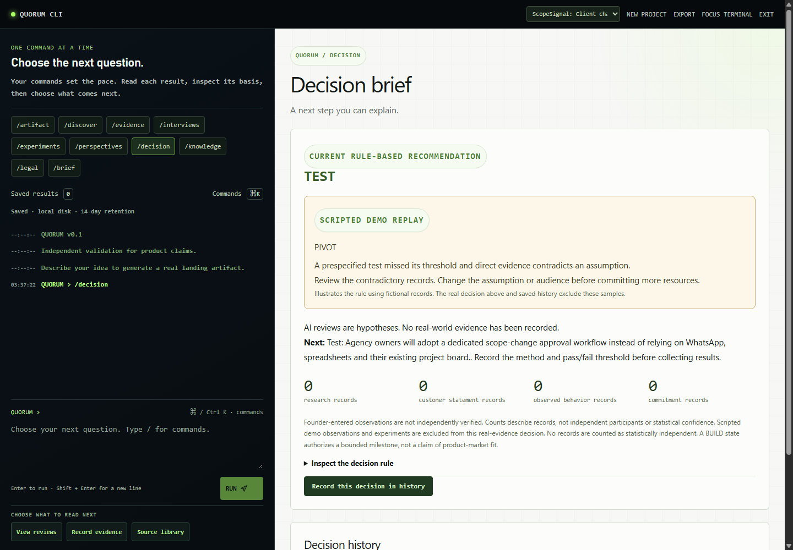
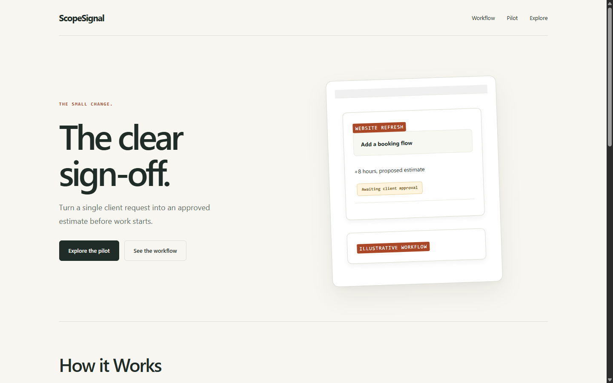

Solo founders.
Small B2B teams.
Choosing the next development commitment.
From an idea to a traceable next test.
Quorum helps solo founders and small product teams turn uncertain ideas into evidence-linked next decisions.
Founders can ship before learning what would make a buyer change behavior.
Choosing the next development commitment.
Research and feedback accumulate separately.
Connect the assumption, test, observation and decision.
Make the next learning cycle count before another build cycle begins.
Problem hypothesis. No customer-study or adoption evidence is claimed.
Sandboxed website, six AI roles, custom profiles and angles.
Cited RAG, interviews, evidence, experiments and Live capture.
Inspectable rules, legal preparation, history and private exports.
Theoretical solution.
Functional prototype, connected workflows and tests.


AI roles and the ScopeSignal case are simulated. Screens and software checks are actual. Customer validation and hosted rollout remain open.
Recorded verification / 25 October 2026 / Live artifacts may use Groq recovery after Claude timeout.
What might be true?
What can a source support?
What did someone actually do?
Beyond an isolated chat: connect assumptions, criteria, sources and dated decisions.
Commit each review before streaming it. Completed work survives a disconnect.
Partial panel failures: retain successes and retry only unfinished reviewers.
Design ruleSynthetic agreement cannot authorize BUILD.
Start with people who can run a reachable, bounded test.
Measure completed learning cycles and return behavior.
Then validate willingness to pay and team workflows.
Next milestone: a founder returns with new evidence.